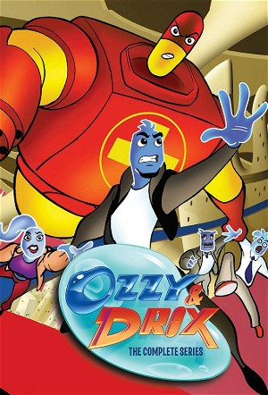

Ozzy & Drix (2002)
ActionAdventureAnimationChildrenComedyFamilyFantasy
| Year | 2002 |
|---|---|
| Rating | TV-Y7 |
| Status | Completed |
| Seasons | 3 |
| Episodes | 27 |
| Genre | Action, Adventure, Animation, Children, Comedy, Family, Fantasy |
A year after Ozzy and Drix defeated Thrax and saved Frank from dying in Osmosis Jones, Ozzy and Drix chase a scarlet fever bacterium (possibly thanks to Frank resuming his poor eating habits). During the chase, Ozzy, Drix and the germ get sucked up from Frank by a mosquito and arrive on a Cuban American teenager named Hector Cruz. After some initial problems with their new home, both are installed as Private Investigators, vowing to protect Hector's well being from any viral threat, not to mention, help him through the changes in his teen years.
Episodes
Specials
| # | Title | Air Date | Synopsis |
|---|---|---|---|
| 1 | Osmosis Jones | 2001-10-08 | A policeman white blood cell, with the help of a cold pill, must stop a deadly virus from destroying the human they live in, Frank. |
Season 1
| # | Title | Air Date | Synopsis |
|---|---|---|---|
| 1 | Home with Hector | 2002-09-14 | By way of a simple mosquito bite, Ozzy and Drix are transferred into the body of a 13-year-old boy, Hector. Unfortunately, a nasty germ named Scarlet Fever is also transferred, and our heroes have to capture him before h |
| 2 | Reflex | 2002-09-21 | Ozzy accidentally produces a neural spasm that causes Hector to kick the school bully. When the bully threatens to beat up Hector after school, Ozzy has to figure out a way to help Hector defend himself. |
| 3 | Strep-Finger | 2002-09-28 | Ozzy becomes jealous of a super agent (Penicillin G) who has been injected into Hector to track down a powerful germ known as Strepfinger. |
| 4 | A Lousy Haircut | 2002-10-05 | When Ozzy discovers there are lice eggs in Hector's hair, he and Drix venture onto the scalp to knock the eggs off, only to end up running into the monstrous Mother Louse! |
| 5 | Oh My Dog | 2002-10-12 | Drix's new pet dog, Dander, is mistaken for a Allergen that is threatening the city. |
| 6 | Street Up | 2002-10-19 | Drix tries to learn how to act ""street"" and ends up helping an acne germ create a huge zit on Hector's face. |
| 7 | Gas of Doom | 2002-11-09 | Ozzy, Drix and Maria commandeer a submersible police craft into the intestines to stop a gas build-up that threatens Hector's social situation. |
| 8 | Where There's Smoke | 2002-11-16 | Ozzy must keep Nick O'Teen from getting to the brain where he will cause Hector to smoke. |
| 9 | The Globfather | 2002-11-30 | When Sal Monella, a poisonous gangster germ, kidnaps the Mayor with plans to poison Hector, Ozzy and Drix must come to his rescue. |
| 10 | Ozzy Jr. | 2002-12-07 | Ozzy thinks he's going to have a baby, but it turns out he's been infected with an intracellular bacteria by returning villain Strepfinger. Ozzy and Drix must find a way to destroy the parasite growing within Ozzy before |
| 11 | Growth | 2003-02-01 | The Mayoral election is coming up, and Spryman's opponent, a nerdy brain cell named Sylvian Fisher, is using a secret growth formula to cause destructive growth spurts and make the Mayor look bad. Ozzy and Drix must stop |
| 12 | Sugar Shock | 2003-02-08 | Hector binges on candy, creating a sugar rush that speeds up all the cells and causes the bacteria population to swell. When his parents cut him off sugar, his drop in blood sugar slows all the cells to a crawl. But the |
| 13 | The Dream Factory | 2003-03-01 | Hector's terrible recurring nightmare is keeping everyone in the City of Hector awake. Ozzy and Drix go to the ""Subconscious Network,"" where dreams are produced, and enter Hector's nightmare to help him face his fear. |
Season 2
| # | Title | Air Date | Synopsis |
|---|---|---|---|
| 1 | An Out of Body Experience (1) | 2003-08-23 | Ozzy gets transfered into a girl named Christine's body when she gives Hector mouth-to-mouth when he jumps off the high dive to impress her, while there Ozzy starts changing colors and acting like a girl also he is arres |
| 2 | An Out of Body Experience (2) | 2003-08-30 | Ozzy is still in Christine, using REM sleep (or Random Eye Movement). He calls Drix for help, thats when he learns he's gender morphing. When a cell from a certain gender goes to a body of another gender, that cell becom |
| 3 | Lights Out! | 2003-09-06 | Everyone inside Hector forgets who Ozzy and Drix are when Hector experiences a concussion, forcing them to locate the site of the concussion, so they can reboot Hector's memories. |
| 4 | The Conqueror Worm | 2003-09-13 | Hector eats a sausage that he barely cooked and gets sick which leads him to getting two worms in his the male worm dies after mating, but the female survives, so Ozzy tries to kill it along with a crazy captain and Drix |
| 5 | Puberty Alert | 2003-09-20 | Hector discovers hair growing on his chin; testosterone gang ties up the mayor and wreaks havoc. |
| 6 | Tricky Ricardo | 2003-09-27 | After getting injured on a police case, Maria is sent home to rest for the week. She decided to use this time to work on a family reunion coming up for her. Drix notices a rip on the corner of Maria's family picture. Mar |
| 7 | Aunti Histamine | 2003-10-04 | Hector uses a Nose spray to clear his nose, and Drix's Aunt appears. Suddenly, there's a drop in water in Hector and Ozzy thinks Drix's aunt is causing it. |
| 8 | A Growing Cell | 2003-10-11 | Hector is super-sizing at fast-food resturaunts far too much, which gives Sticity, a bad cholestrial beatnik, the chance to kidnap a fat cell family's child, in an atempt to clog an artery. Can Ozzy and Drix (and the new |
| 9 | A Cold Day in Hector | 2003-10-25 | While snowboarding with Travis, Hector crosses an off limits area. Hector starts to freeride, but falls and makes a rip in his trousers. This causes a virus named Cryle to drop Hector's temperature. Ozzy and Drix get rea |
| 10 | Supplements (aka Triumph of the Supplements) | 2004-06-14 | When Hector accidently breathes in lead, the lead gang cause him to make him feel ill. The Mayor then makes Hector eat cereal so he can bring in The Supplements. |
| 11 | Double Dose (aka Ozzy and Ozzy) | 2004-06-21 | Ozzy goes into mitosis and a four armed evil clone doubles from him trying to steal the iodine. |
| 12 | Nature Calls | 2004-06-28 | Hector's appendix is about to burst. |
| 13 | Cavities (aka Journey to the Center of the Tooth) | 2004-07-05 | Hector eats too much sugar and doesn't brush so he gets a cavity caused by General Malay. |